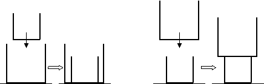
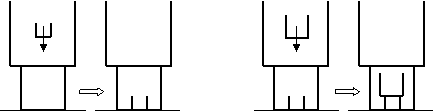
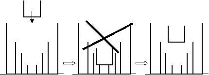

Problem A - A Pile of Boxes
You are making a pile of boxes. The boxes have cubic dimensions (equal
edges) and their upper surfaces are open, so a smaller box will fall
into a larger one (container), but a larger box will stay on the
smallest top (Figure 1).

Figure 1 - Boxes falling over a pile
Furthermore, these boxes have strange properties: they are permeable to
other smaller boxes, so one box may fall through the interior of larger
boxes until a smaller one or the floor is found (Figure 2).

Figure 2 - Boxes are permeable to
smaller ones
There is one restriction: if one box does not fit entirely in the
height of a potential container, then it stays in the upper possible
level (Figure 3).

Figure 3 - One box must fit entirely
in its container
The Problem
Given a sequence of boxes, it is necessary to evaluate the total pile
height. All the cubes have different dimensions.
Input
The input will contain several test cases, each of them as described below.
Consecutive test cases are separated by a single blank line.
The input is a sequence of text lines, as follows.
The first text line contains the number NC (integer format) of boxes.
It is followed by a sequence of NC text lines containing, each one, the
length of a box (integer format). The maximum number of boxes is 100.
Output
For each test case, output on a line by itself one integer number, representing the total pile height.
Example Input
8
10
4
6
3
11
7
8
5
Example Output
29
Figure 4 - Pile generated in the example
2005 Programming Contest of Porto University
Round 2, 28 of September of 2005
(Author: Augusto Sousa - FEUP)